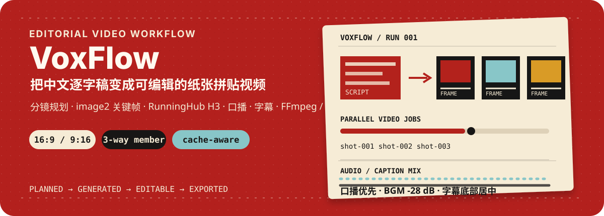
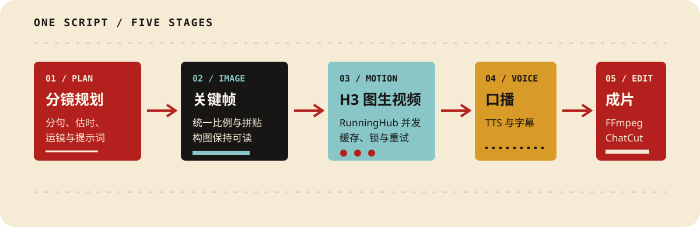

VoxFlow 是一套面向中文知识视频的自动化生产骨架：从逐字稿出发，规划分镜，生成纸张拼贴关键帧，调用 RunningHub MiniMax H3 图生视频，生成口播和字幕，再用 FFmpeg 或 ChatCut 输出成片。
它适合需要反复制作解释型短视频的创作者、研究者和自动化开发者。项目把最容易重复出错的部分固定下来：画面比例、提示词结构、缓存、并发锁、付费任务保护、混音和字幕位置。

真实横屏成片画面：纸张拼贴构图、H3 镜头运动、口播混音与底部居中字幕。
| 输入 | 自动处理 | 输出 |
|---|---|---|
| 一份中文逐字稿 | 分句、估时、分镜、提示词、缓存和并发任务 | 关键帧、分镜视频、口播、字幕、MP4、ChatCut handoff |
git clone https://github.com/shaomingchan/vox_video.git
Set-Location vox_video
py -3.11 -m venv .venv
.\.venv\Scripts\python.exe -m pip install --upgrade pip
.\.venv\Scripts\python.exe -m pip install -e .
Copy-Item config.example.toml config.local.toml
编辑 config.local.toml，填写外部适配器和 BGM 路径：
[paths]
whiteboard_root = "D:/path/to/whiteboard"
vox_director_root = "C:/Users/you/.codex/skills/vox-director"
projects_root = "projects"
[assembly]
bgm = "D:/path/to/background-music.mp3"
设置 RunningHub 会员 Key：
$env:RUNNINGHUB_API_KEY = "<your-member-key>"
scripts/voxflow.ps1 doctor
scripts/voxflow.ps1 plan --project demo --script examples/demo-script.txt
scripts/voxflow.ps1 voice --project demo
scripts/voxflow.ps1 images --project demo
scripts/voxflow.ps1 videos --project demo --limit 3
scripts/voxflow.ps1 preview --project demo --limit 3
--limit 3 是有意的成本检查点：先看画面比例、运动、口播和字幕，再决定是否运行完整视频批次。
scripts/voxflow.ps1 run `
--project demo `
--script examples/demo-script.txt
最终本地成片位于 projects/demo/final/final_video.mp4。
16:9 横屏和 9:16 竖屏；图片、RunningHub 和合成画布使用同一比例-16 LUFS，真峰值上限 -1.5 dBTP-28 dB40 px横屏配置示例：
[project]
aspect = "16:9"
[assembly]
width = 1920
height = 1080
竖屏配置示例：
[project]
aspect = "9:16"
[assembly]
width = 1080
height = 1920
[runninghub]
api_profile = "member"
instance_type = "default"
concurrency = 3
会员模式代码级上限为 3 路并发。
$env:RUNNINGHUB_API_PROFILE = "enterprise"
$env:RUNNINGHUB_ENTERPRISE_API_KEY = "<your-enterprise-key>"
[runninghub]
api_profile = "enterprise"
enterprise_instance_type = "plus"
enterprise_concurrency = 100
企业模式会默认选择 Plus 机型，并把并发限制在 1 到 100 之间。100 路是服务上限，不等于每次都应该提交 100 个付费任务。
[runninghub]
instance_type = "lite"
Lite 模式不发送 instanceType，交给 RunningHub 调度。
planner.py 将中文逐字稿拆成 beat 和 shot，并为每个镜头生成：
图片和视频根据提示词、画面比例、工作流 ID 和输入文件哈希建立指纹：
--force 只在确认要重新生成时使用待生成镜头超过 max_unconfirmed_batch 时，流程会主动停止。优先使用：
scripts/voxflow.ps1 videos --project demo --limit 3
scripts/voxflow.ps1 videos --project demo --shot-id 001 --shot-id 004
scripts/voxflow.ps1 videos --project demo --all
完整批次必须显式传入 --all，避免缓存异常或误操作造成大批量重复任务。
生成可编辑交接文件：
scripts/voxflow.ps1 chatcut --project demo
输出：
projects/demo/final/chatcut_handoff.json
projects/demo/final/chatcut_prompt.txt
ChatCut 是可选编辑出口；即使没有 ChatCut，FFmpeg 本地合成仍可产出预览和最终 MP4。
这个仓库已经可以复现当前生产环境，但仍有明确的外部依赖：
如果你要把它部署给陌生用户，建议先完成 Provider 插件化、RunningHub 节点映射配置化和 ChatCut 权限收紧，再发布公开 Beta。
真实 API Key 永远不进入仓库：
RUNNINGHUB_API_KEYRUNNINGHUB_ENTERPRISE_API_KEYRUNNINGHUB_API_PROFILE=enterpriseconfig.toml、config.local.toml、.env 和生成目录均已忽略提交前运行：
python scripts/check_secrets.py
扫描器只输出文件、行号和规则名称，不回显疑似凭据内容。发现密钥进入 Git 历史时，应立即在服务端撤销并重新生成。
详细处理规则见 SECURITY.md。
vox_video/
assets/readme/ README SVG 视觉资产
examples/ 可提交的示例逐字稿
scripts/ PowerShell 入口与安全扫描
src/voxflow/ 分镜、适配器、RunningHub、合成和 ChatCut
tests/ 不调用付费 API 的单元测试
config.example.toml 无密钥配置模板
projects/ 本地生成项目，不进入 Git
本地：
python -m unittest discover -s tests -v
python -m compileall -q src tests scripts
python scripts/check_secrets.py
GitHub Actions 会在 Windows runner 上执行安装、密钥扫描、Python 3.11 编译和测试。
欢迎围绕这些方向提交 Issue 或 PR：
voxflow status提交前请确认：
python scripts/check_secrets.py
python -m unittest discover -s tests -v
git diff --check
本项目使用 Apache-2.0 许可证，详见 LICENSE。第三方服务、模型、字体、音乐和外部插件仍受各自条款约束。